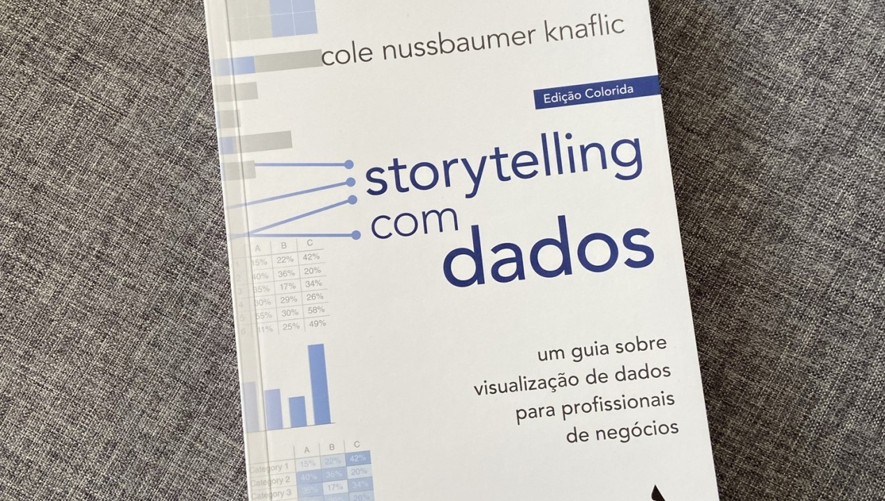
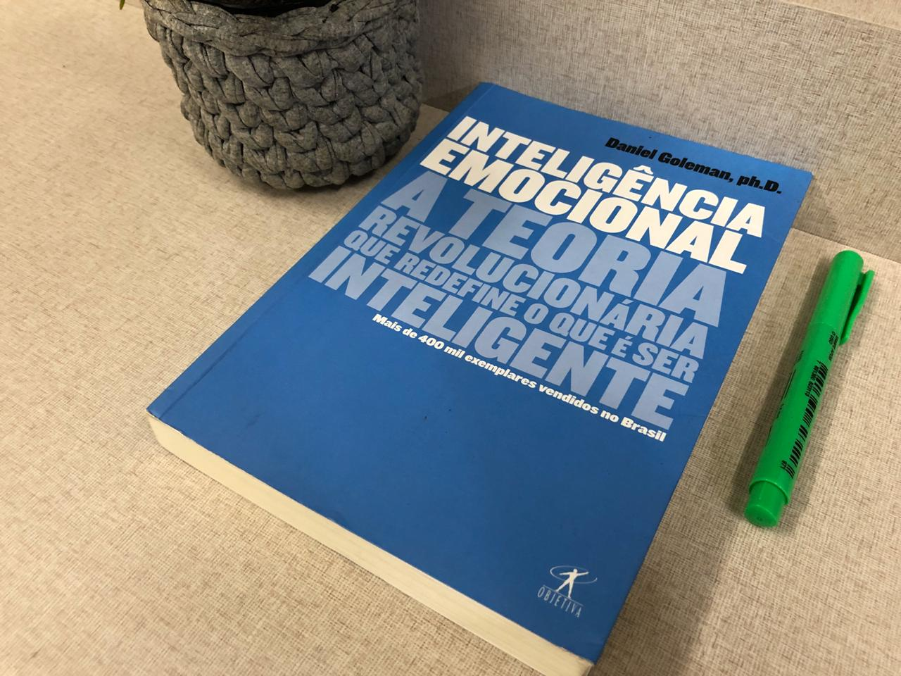

20 de Março de 2023
Storytelling com Dados

"Storytelling com Dados", escrito por Cole Nussbaumer Knaflic, é um livro essencial para qualquer pessoa que queira aprender a comunicar efetivamente dados por meio de histórias convincentes. A autora oferece uma abordagem prática e acionável, repleta de exemplos e dicas úteis. Ela enfatiza a importância de simplificar visualizações, destacar pontos-chave e criar narrativas envolventes. Com uma linguagem clara e acessível, Knaflic capacita os leitores a transmitirem mensagens impactantes usando dados de forma clara e convincente. Um guia indispensável para quem deseja aprimorar suas habilidades de visualização e contar histórias com dados.
20 de Dezembro de 2022
Inteligência Emocional

"Inteligência Emocional", escrito por Daniel Goleman, é um livro revolucionário que explora o papel das emoções na nossa vida e no sucesso pessoal e profissional. Goleman argumenta que a inteligência emocional - a capacidade de reconhecer, entender e gerenciar nossas próprias emoções e as dos outros - é um fator crucial para o bem-estar e o desempenho. O autor apresenta estudos científicos e casos reais para sustentar sua teoria, mostrando como a inteligência emocional afeta a saúde, os relacionamentos, a produtividade e a liderança. Goleman oferece estratégias práticas para desenvolver habilidades emocionais, como autoconsciência, empatia e autorregulação.
Embora alguns críticos questionem a validade e a aplicabilidade da inteligência emocional, o livro de Goleman foi um marco na compreensão das emoções e sua influência em nossas vidas. Com uma escrita clara e acessível, ele nos convida a repensar o conceito de inteligência e a cultivar um maior autoconhecimento emocional. Uma leitura essencial para aqueles interessados em aprimorar suas habilidades emocionais e alcançar um maior equilíbrio e sucesso em suas vidas.